REST on Akka: Connect to the World
Scala eXchange — 2014-12-08@London
Mathias Doenitz
/
/
This presentation: http://spray.io/scalax/2014/
Why does Akka need an HTTP module?
Isn't this "feature creep"?
Too high-level?
Where is the connection to its "actor heart"?
Akka
"A toolkit and runtime for building
highly concurrent, distributed, and fault-tolerant
event-driven applications on the JVM"
Akka's Promise
"Build powerful
concurrent
concurrent
 &
distributed
distributed
&
distributed
distributed

applications more easily"
Distribution implies Integration
- Between your own (sub-)systems
akka-remoting &akka-cluster - With other (external) systems
akka-http - HTTP is the most successful
integration protocol to date!
akka-http origin: spray.io
- Embeddable HTTP stack
entirely built on Akka actors - Focus: HTTP integration layers
rather than web applications - Server- and client-side
- Fully integrated into Typesafe stack
(threadpools, config, debugging, etc.)
spray features
- Immutable, case-class-based HTTP model
- Fast, lightweight HTTP client and server
- Powerful DSL for server-side API definition
- Fully async & non-blocking,
actor-friendly, modular, testable - Scala & actors "all the way through"
spray weaknesses
- Handling of chunked requests is clunky, incomplete
- Dealing with large message entities can be difficult
- High-level routing DSL sometimes unintuitive, some mistakes not caught at compile-time
- Deep implicit structures, sometimes hard to debug
- Missing features (e.g. websocket support)
Proxying Large Responses


akka-http is spray 2.0
- Across-the-board polishing,addressing of weaknesses
- Java APIs
- Simplified module structure
- Core improvement:
Now based on Reactive Streams
Streams in akka-http
- Requests on one HTTP connection
- Responses on one HTTP connection
- Chunks of a chunked message
- Bytes of a message entity
HTTP Stream Interfaces
HTTP Server API (1/3)
def bind(endpoint: InetSocketAddress, ...): Http.ServerBinding
object Http {
trait ServerBinding {
def connections: Source[IncomingConnection]
def localAddress(mm: MaterializedMap): Future[InetSocketAddress]
def unbind(mm: MaterializedMap): Future[Unit]
/* ... plus `startHandlingWithXXX(...)` sugar ... */
}
}
HTTP Server API (2/3)
object Http {
trait IncomingConnection {
def localAddress: InetSocketAddress
def remoteAddress: InetSocketAddress
def handleWith
(handler: Flow[HttpRequest, HttpResponse]): MaterializedMap
def handleWithSyncHandler
(handler: HttpRequest ⇒ HttpResponse): MaterializedMap
def handleWithAsyncHandler
(handler: HttpRequest ⇒ Future[HttpResponse]): MaterializedMap
}
}
HTTP Server API (3/3)
/**
* Transforms a given HTTP-level server Flow
* into a lower-level TCP transport flow.
*/
def serverFlowToTransport(
serverFlow: Flow[HttpRequest, HttpResponse],
...): Flow[ByteString, ByteString]
Simple HTTP Server
val binding = Http().bind("localhost", 8080)
binding startHandlingWithSyncHandler {
case HttpRequest(GET, Uri.Path("/ping"), _, _, _) ⇒
HttpResponse(entity = "PONG!")
case _ ⇒ // catch all
HttpResponse(404, entity = "Unknown resource!")
}
Basic HTTP Client API (1/2)
def outgoingConnection(endpoint: InetSocketAddress, ...)
: Http.OutgoingConnection
object Http {
trait OutgoingConnection {
def remoteAddress: InetSocketAddress
def localAddress(mm: MaterializedMap): Future[InetSocketAddress]
def flow: Flow[HttpRequest, HttpResponse]
}
}
Basic HTTP Client API (2/2)
/**
* Transforms the given low-level TCP client transport
* Flow into a higher-level HTTP client flow.
*/
def transportToConnectionClientFlow(
transport: Flow[ByteString, ByteString],
...): Flow[HttpRequest, HttpResponse]
HTTP model
- `case class`-based data model
- High-level abstractions for most things HTTP
- Fully immutable, little logic
- Predefines common media types, status codes, encodings, charsets, cache-control directives, etc.
- Open for extension (e.g. custom media types)
HTTP Request
case class HttpRequest(
method: HttpMethod = HttpMethods.GET,
uri: Uri = Uri./,
headers: immutable.Seq[HttpHeader] = Nil,
entity: RequestEntity = HttpEntity.Empty,
protocol: HttpProtocol = HttpProtocols.`HTTP/1.1`
) extends HttpMessage
HTTP Response
case class HttpResponse(
status: StatusCode = StatusCodes.OK,
headers: immutable.Seq[HttpHeader] = Nil,
entity: ResponseEntity = HttpEntity.Empty,
protocol: HttpProtocol = HttpProtocols.`HTTP/1.1`
) extends HttpMessage
HTTP model: Uri
case class Uri( // proper RFC 3986
scheme: String, // compliant,
authority: Authority, // immutable
path: Path, // URI model
query: Query, // with a fast,
fragment: Option[String]) // custom parser
HTTP Entity (1/2)
sealed trait HttpEntity
sealed trait ResponseEntity extends HttpEntity
sealed trait RequestEntity extends ResponseEntity
// can be used for any message (request or response)
type MessageEntity = RequestEntity
sealed trait BodyPartEntity extends HttpEntity
// can be used for messages as well as bodyparts
sealed trait UniversalEntity extends HttpEntity
HTTP Entity (2/2)
object HttpEntity {
case class Strict(contentType: ContentType,
data: ByteString) extends UniversalEntity
case class Default(contentType: ContentType, contentLength: Long,
data: Source[ByteString]) extends UniversalEntity
case class Chunked(contentType: ContentType,
chunks: Source[ChunkStreamPart]) extends MessageEntity
case class CloseDelimited(contentType: ContentType,
data: Source[ByteString]) extends ResponseEntity
case class IndefiniteLength(contentType: ContentType,
data: Source[ByteString]) extends BodyPartEntity
}
Exemplary HTTP Headers
case class `Accept-Charset`(charsetRanges: immutable.Seq[HttpCharsetRange])
extends HttpHeader
case class `Cache-Control`(directives: immutable.Seq[CacheDirective])
extends HttpHeader
case class `Set-Cookie`(cookie: HttpCookie)
extends HttpHeader
case class RawHeader(name: String, value: String)
extends HttpHeader
The Application Stack

akka-io
- Bridges the gap between Java NIO
and Akka actors / streams - Provides both msg-based
as well as stream-based API - Supports TCP, UDP and SSL/TLS
akka-http-core
- Directly sits on top of Akka IO
- Performs TCP HTTP "translation"
- Cleanly separated layer of stream trans-
formations provided as an Akka Extension - Implements HTTP "essentials",
no higher-level features (like file serving)
akka-http
- Provides higher-level server- and client-side APIs
- "Unmarshalling" custom types from HttpEntities
- "Marshalling" custom types to HttpEntities
- (De)compression (GZip / Deflate)
- Routing DSLs
Server-Side Routing DSL
- Internal DSL for the interface
layer to the application - Type-safe, yet flexible
- Much more than just routing:
behavior definition - Small and simple building blocks: directives
- Highly composable
Server-Side API Layer: Overview


API Layer Responsibilities
- Request routing based on method, path, query, entity
- (Un)marshalling to / from domain objects
- Encoding / decoding (compression)
- Authentication / authorization
- Caching and serving static content
- RESTful error handling
Routing DSL: show me code
import Directives._
val binding = Http().bind("localhost", 8080)
binding startHandlingWith {
path("order" / HexIntNumber) { id =>
get {
complete(s"Received GET for order $id")
} ~
put {
complete(s"Received PUT for order $id")
}
}
}
Predefined Directives (1.0-M1)
authorize, cancelRejection, cancelRejections, complete, completeOrRecoverWith, completeWith, compressResponse, compressResponseIfRequested, conditional, cookie, decodeRequest, decompressRequest, delete, deleteCookie, deleteCookie, encodeResponse, entity, extract, extractExecutionContext, extractFlowMaterializer, extractHost, extractLog, extractRequest, extractScheme, extractSettings, extractUnmatchedPath, extractUri, failWith, formField, formFields, get, getFromBrowseableDirectories, getFromBrowseableDirectory, getFromDirectory, getFromFile, getFromResource, getFromResourceDirectory, handleExceptions, handleRejections, handleWith, head, headerValue, headerValueByName, headerValueByType, headerValuePF, host, listDirectoryContents, logRequest, logRequestResult, logResult, mapInnerRoute, mapRejections, mapRequest, mapRequestContext, mapResponse, mapResponseEntity, mapResponseHeaders, mapRouteResult, mapRouteResultFuture, mapRouteResultPF, mapRouteResultWith, mapRouteResultWithPF, mapSettings, mapUnmatchedPath, method, onComplete, onSuccess, optionalCookie, optionalHeaderValue, optionalHeaderValueByName, optionalHeaderValueByType, optionalHeaderValuePF, options, overrideMethodWithParameter, overrideStatusCode, parameter, parameterMap, parameterMultiMap, parameters, parameterSeq, pass, patch, path, pathEnd, pathEndOrSingleSlash, pathPrefix, pathPrefixTest, pathSingleSlash, pathSuffix, pathSuffixTest, post, provide, put, rawPathPrefix, rawPathPrefixTest, recoverRejections, recoverRejectionsWith, redirect, reject, reject, requestEncodedWith, respondWithDefaultHeader, respondWithDefaultHeaders, respondWithHeader, respondWithHeaders, responseEncodingAccepted, scheme, setCookie, textract, tprovide, withExecutionContext, withFlowMaterializer, withLog, withRangeSupport, withSettings
Real-World Example (spray)
lazy val route =
encodeResponse(Gzip) {
pathEndOrSingleSlash {
get {
redirect("/doc")
}
} ~
pathPrefix("api") {
path("top-articles") {
get {
parameter("max".as[Int]) { max =>
validate(max >= 0, "query parameter 'max' must be >= 0") {
complete {
(topArticlesService ? max).mapTo[Seq[Article]]
}
}
}
}
} ~
tokenAuthenticate { user =>
path("ranking") {
get {
countAndTime(user, "ranking") {
parameters("fixed" ? 0, "mobile" ? 0, "sms" ? 0, "mms" ? 0,
"data" ? 0).as(RankingDescriptor) { descr =>
complete {
(rankingService ? Ranking(descr)).mapTo[RankingResult]
}
}
}
}
} ~
path("accounts") {
post {
authorize(user.isAdmin) {
entity(as[AccountDetails]) { details =>
complete {
(accountService ? NewAccount(details)).mapTo[OpResult]
}
}
}
}
} ~
path("account" / IntNumber) { accountId =>
get { ... } ~
put { ... } ~
delete { ... }
}
}
} ~
pathPrefix("v1") {
proxyToDjango
} ~
pathPrefix("doc") {
respondWithHeader(`Cache-Control`(`max-age`(3600))) {
transformResponse(_.withContentTransformed(markdown2Html)) {
getFromResourceDirectory("doc/root",
pathRewriter = appendFileExt)
}
}
} ~
} ~
cacheIfEnabled {
encodeResponse(Gzip) {
getFromResourceDirectory("public")
}
}
Best Practices
- Keep route structure clean and readable,
pull out all logic into custom directives - Don’t let API layer leak into application
- Use (Un)marshalling infrastructure
- Think about error handling/reporting
right from the start - Use sbt-revolver for fast dev turn-around
There is more...
- Testing routes
- client-side APIs
- JSON support
- ...
akka-http Roadmap
- Agree and specify
Reactive Streams API - Finish initial release of new akka modules
- akka-stream
- akka-http-core (client- & server-side)
- akka-http (server-side)
- akka-http (client-side)
- Add websockets support (client- & server-side)
- Move Play onto
akka-http (incrementally)